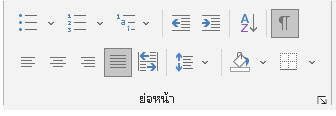
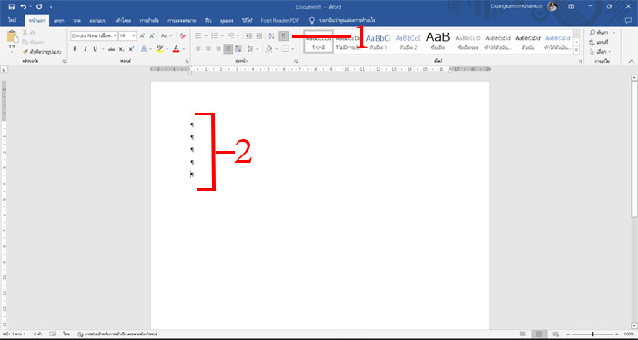
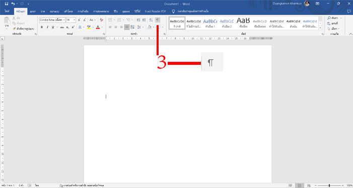
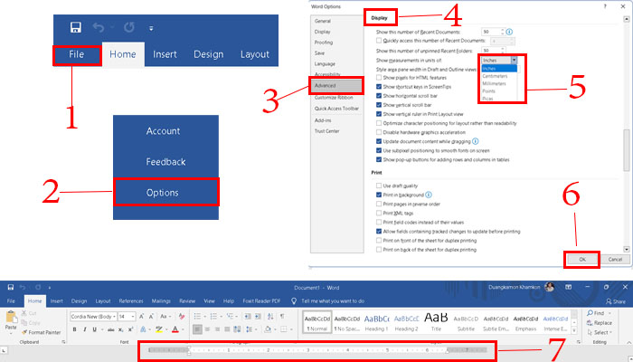

4.การเตรียมพร้อมก่อนการใช้งานโปรแกรม Microsoft Word
หัวข้อนี้เป็นหัวข้อพิเศษในการจัดรูปแบบให้เหมาะสมก่อนเริ่มใช้งานทั่วไป ไม่เช่นนั้นเวลาใช้งานจริงอาจต้องใช้เวลา
ในการปรับ
เปลี่ยนแต่ละเอกสารนาน จึงควรกำหนดค่าให้เหมาะสมตั้งแต่เริ่มต้น
การแสดง/ซ่อน สัญลักษณ์ (Show/Hide)
ปุ่ม (Show/Hide) ใช้แสดงหรือซ่อนเครื่องหมายย่อหน้าและสัญลักษณ์การจัดรูปแบบอื่น ๆ ที่อยู่ภายในเอกสาร
 |
 |
| 1.คลิกแท็บ Home คลิกปุ่ม (Show/Hide)จะปรากฏเครื่องหมายย่อหน้าและสัญลักษณ์การจัดรูปแบบอื่น ๆ ที่ซ่อนอยู่ |
| 2.กดคีย์บอร์ด Enter จะพบว่ามีเครื่องหมายพาย ทุกบรรทัดที่กดแป้นคีย์ Enter |
| 3.คลิกปุ่ม (Show/Hide) อีกครั้ง เครื่องหมายและสัญลักษณ์ต่าง ๆ จะหายไป |
ปรับหน่วยวัดบนไม้บรรทัด
ในการเริ่มต้นการพิมพ์เอกสาร ปกติโปรแกรมกำหนดหน่วยของไม้บรรทัดเป็นเซนติเมตร สามารถปรับหน่วยวัดเป็นนิ้วหรือหน่วยอื่น ๆ ได้ให้เหมาะสมกับงาน และความถนัด ตามขึ้นตอนต่อไปนี้
|  |
1.คลิกแท็บไฟล์ (ไฟล์)
2.คลิกรายการ Options (ตัวเลือก)
3.ปรากฏหน้าต่าง Word Options คลิกที่ Advanced (ขั้นสูง)
4.เลื่อนแถบเลื่อน Scrollbar ลงมาที่ Display
5.คลิกที่ลูกศรช่อง Show measurements in units of: เลือกหน่วยวัดเป็นนิ้ว Inches (นิ้ว)
6.คลิกปุ่ม OK
7.สังเกตตัวเลขบนไม้บรรทัด แสดงเลข 1 ถึง เลข 6 (สีขาว) |
|